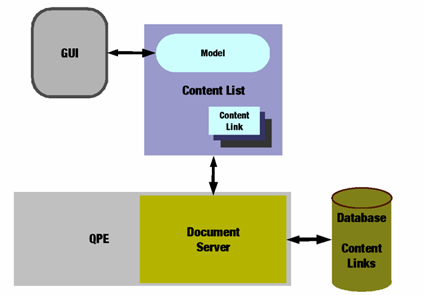

|
Home · All Namespaces · All Classes · Grouped Classes · Modules · Functions | |
The Qt Extended Document System provides document and application management functionality with integrated support for the Safe Execution Environment (SXE) and Digital Rights Management (DRM) facilities of Qt Extended.
Applications and documents are represented by a common content abstraction through which meta-data may be discovered and a variety of actions performed. The document system can be queried for content using content sets which represent collections of content all matching some meta-data criteria.

The main features of the Qt Extended Document System are described in the following sections:
Features provided by the Qt Extended Document System include:
For selecting documents within an application Qt Extended offers two selector widgets; QDocumentSelector(Dialog) and QImageDocumentSelector(Dialog). For applications with limited file system privileges there is the QDocumentSelectorService which requests that the server display a document selector and open the selected document on the applications behalf.
Applications may also associate themselves with specific document types such that any attempt to execute a document will invoke the associated application. For instructions on associating an application with a type see Main Document Widget.
| Copyright © 2009 Trolltech | Trademarks | Qt Extended 4.4.3 |